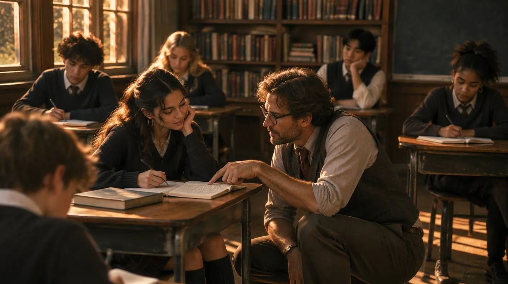

Mornings for the core.
Afternoons for the whole child.
Core academics every morning. Bible, Spanish, art, music, computers and PE every afternoon. Teachers who know your child.
A full day, shaped with purpose.
Every day begins in chapel. Core subjects fill the morning; Bible, computers, Spanish, art, music and PE fill the afternoon. On Fridays, every class recites its memory verse together.
Core subjects
Focused time for the core academic subjects.
Enrichment
Bible · Computers · Spanish · Art · Music · PE
Results
Nationally on the Stanford Achievement Test
One school.
Every season of growing up.
Lower, Middle and Upper School — each with teachers who know your child by name.
Lower School
Middle School
Upper School
Where learning becomes a delight.
Colorful materials, learning centers and hands-on activities suit every kind of learner, in a friendly and loving classroom.
The lives of the major people of the Bible, and how to live out what they teach.
Journeys reading with Abeka phonics: letters, sounds, blends and first words.
GO Math! (Texas edition): from hands-on models to solving problems.
Interactive Science (Texas edition): a first look at God’s creation.
Children turn five on or before September 1, and bring lunch and a snack each day.
A school day that fits your family.
Choose a traditional full day, a part-day core program for Kindergarten through Grade 5, or homeschool enrichment — with extended care before and after school.
Strong foundations, grade by grade.
Each subject follows an established curriculum. Every week brings a memory verse, and classes take turns leading chapel.
Grade 1 God’s gifts · 2 Moses and Exodus · 3 Abraham to Daniel · 4 the life of Christ and Paul · 5 a survey of the Old Testament.
Journeys guided reading, with support for every reader.
Wordly Wise 3000 in grades 3–5: words, comprehension and word origins.
GO Math! (Texas edition), from concept to problem solving.
Pearson Interactive Science (Texas edition).
Houghton Mifflin Harcourt in grades 1–4; U.S. history with McGraw Hill in grade 5.
Ready for what comes next.
Middle School explores science, great books and everyday math. High School follows a plan to graduation, with Bible every year.
Middle School
Bible, Holt literature, math toward Algebra 1, hands-on science and social studies. Electives: Spanish, ASL, Microsoft Office, typing and PE.
High School
Honors, AP and Blinn College dual credit courses earn an extra grade point on the transcript.
Credits required to graduate
College credit, before graduation.
Through dual credit with Blinn College, Upper School students can begin earning college credit while still at Cornerstone.
Dual credit partner
College courses taken alongside high school.
National Honor Society
Recognizing scholarship, service, leadership and character.
Where graduates go
Texas A&M, Harding University, Blinn College and beyond.